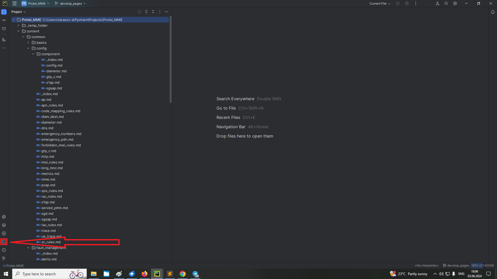
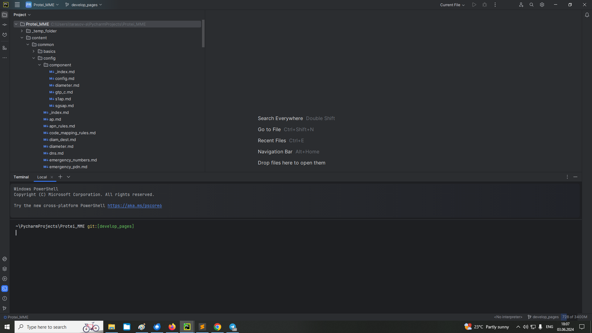
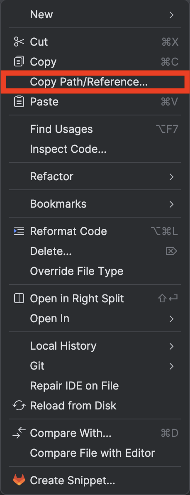
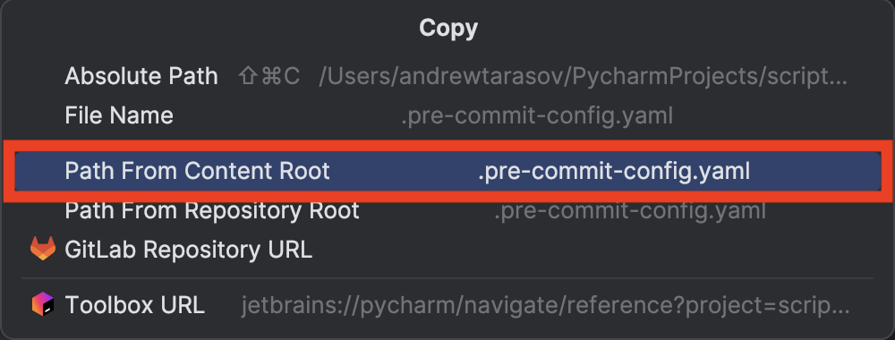

1. Общая информация
В репозитории собраны небольшие скрипты, которые явно не тянут на отдельные проекты.
Руководства пользователя находятся в директории docs.
На данный момент доступны команды:
| check-russian |
команда для проверки наличия не переведенных слов в англоязычных файлах |
| convert-tables |
команда для извлечения таблиц из файлов docx в формат Markdown |
| format-code |
команда для форматирования блоков кода |
| link-repair |
команда для исправления ссылок в проекте |
| list-files |
команда для вывода файлов в директории с использованием ряда фильтров |
| reduce-image |
команда для сжатия файлов изображений |
| repair-svg |
команда для корректирования SVG-файлов |
| table-cols |
команда для задания ширин столбцов таблиц в файлах AsciiDoc |
| terms |
команда для получения расшифровок аббревиатур |
| validate-yaml |
команда для валидации YAML-файлов, используемых для генерации PDF |
Вся документация для скриптов выше лежит в директории docs/.
Сгенерированные исполняемые файлы доступны в директории bin/:
| Windows | |
| *nix/MacOS |
2. Запуск команд
Все вызовы активируются через командную строку.
$ <path/to/tw_utilities.exe> COMMAND OPTIONSДля использования любой команды необходимо в терминале ввести путь до исполняемого файла, команду, обязательные аргументы и требуемые опции.
Использование:
tw_utilities
list-files | check-russian | convert-tables | format-code | link-repair | reduce-image | repair-svg | table-cols | terms | validate-yaml
-v/--version | --h/--help
Набор скриптов для технических писателей
Опции:
-v, --version Вывести версию скрипта на экран и завершить работу
-h, --help Вывести справочную информацию на экран и завершить работу
Подкоманды:
check-russian Команда для проверки наличия непереведенных слов
convert-tables Команда для корректного извлечения таблиц из файлов docx в
формат Markdown
format-code Команда для форматирования блоков кода
link-repair Команда для проверки и исправления ссылок в файлах
документации
list-files Команда для вывода файлов в директории
reduce-image Команда для уменьшения размера изображений JPG, PNG
repair-svg Команда для исправления файлов SVG
table-cols Команда для задания ширины столбцам таблиц
terms Команда для вывода расшифровки аббревиатур
validate-yaml Команда для валидации YAML-файла, используемого при
генерации PDF
----------------------------------------------------------------------------------------------------2.1. Примеры
-
Вызов справочной информации
$ tw_utilities.exe <command> --help $ tw_utilities.exe check-russian --help -
Вызов команды с единственным аргументом
$ tw_utilities.exe <command> <ARGUMENT> $ tw_utilities.exe convert-tables "..\Word File.docx" -
Вызов команды со множественными аргументами
$ tw_utilities.exe <command> <ARGUMENT> <ARGUMENT> <ARGUMENT> $ tw_utilities.exe terms CAP MAP ISUP -
Вызов команды с опциями с единственными значениями
$ tw_utilities.exe <command> <option_1> <value_1> <option_N> <value_N> $ tw_utilities.exe format-code --dir "..\Project" --length 80 -
Вызов команды с опциями со множественными значениями
$ tw_utilities.exe <command> <option> <value_1> <value_2> $ tw_utilities.exe repair-svg --file "..\Project\SOME_IMAGE.svg" "..\Project\ANOTHER_IMAGE.svg" $ tw_utilities.exe <command> <option> <value_1> <option> <value_2> $ tw_utilities.exe repair-svg --file "..\Project\SOME_IMAGE.svg" --file "..\Project\ANOTHER_IMAGE.svg" $ tw_utilities.exe <command> <option> <value_1> <value_2> <option> <value_3> $ tw_utilities.exe repair-svg --file "..\Project\SOME_IMAGE.svg" "..\Project\ANOTHER_IMAGE.svg" --file "..\Project\AND_ANOTHER_ONE.svg" -
Вызов команды с опциями, задаваемыми как флаг
$ tw_utilities.exe <command> <flag> $ tw_utilities.exe list-files "..\folder" --recursive $ tw_utilities.exe <command> <no-flag> $ tw_utilities.exe list-files "..\folder" --no-recursive
|
Некоторые параметры взаимоисключающие, т.е. их нельзя задать одновременно.
В таком случае будет активирована ошибка |
3. Некоторые рекомендации
-
В IDE есть встроенная консоль. Она способна выполнять все те же команды, что и Powershell/Terminal.
Рисунок 1. Иконка консолиРисунок 2. Консоль в IDE -
Чтобы удобно и быстро получить путь до файла, можно выполнить следующие шаги:
-
Выбрать файл и ПКМ вызвать меню.
-
В меню выбрать Copy Path/Reference.
Рисунок 3. Меню Copy Path/Reference -
В дополнительном окне выбрать Path From Content Root.
Рисунок 4. Меню Path From Content Root -
Нужный путь будет добавлен в буфер обмена.
-
4. Руководство для check-russian
4.1. Описание
Скрипт проверяет наличие кириллических символов в файлах.
В результате отображается информация, найдены ли не латинские символы:
В файле <path to file> <найдены/не найдены> кириллические буквы [в строках: <line no>, ..., <line no>]-
path to file— путь до файла; -
line no— номер строки в файле, где найдены кириллические символы.
В файле config\ap.en.md не найдены кириллические буквы (1)
В файле config\component\diameter.en.md найдены кириллические буквы:
В строке 20, начиная с 17 символа 'а' (2)
| 1 | Файл переведен полностью |
| 2 | Файл переведен не полностью или присутствуют замены похожих символов: буквы А, В, Е, К, М, Н, О, Р, С, Т, Х. |
Поскольку в выводе возможно много строк, то для удобства ориентирования в нем используется интуитивная цветовая индикация.
| Скрипт не показывает непереведенные слова или подмены схожих букв, это остается делом пользователя, а указывает лишь на файлы и строки, где это обнаружено. |
4.2. Для чего нужно?
При переводе вручную можно вполне себе забыть или не заметить какие-то фразы/слова/предложения, оставшиеся на русском языке.
4.3. Как запустить?
Запускается так же, как и любые другие скрипты:
$ tw_utilities.exe check-russian OPTIONSOPTIONS — опции скрипта
4.3.1. Опции скрипта
Использование:
tw_utilities.exe check-russian
-d/--dir DIR | -f/--file FILE ... FILE | --recursive | --verbose | --keep-logs | --h/--help
Команда для проверки наличия непереведенных слов
Опции:
-d, --dir DIR Директория для обработки
-f, --file FILE ... FILE Перечень файлов для обработки.
Может использоваться несколько раз
--recursive / --no-recursive Флаг рекурсивного поиска файлов.
По умолчанию: True, поиск файлов по вложенным папкам
--verbose / --no-verbose Флаг подробного вывода.
По умолчанию: False, выводятся только ошибки
--keep-logs Флаг сохранения директории с лог-файлом по завершении
работы в штатном режиме.
По умолчанию: False, лог-файл и директория удаляются
-h, --help Вывести справочную информацию на экран и завершить работу
----------------------------------------------------------------------------------------------------
При указании директории в ней выбираются файлы, в которых присутствует постфикс .en.
|
| Путь может быть как абсолютным, так и относительным. |
5. Руководство для convert-tables
5.1. Описание
Скрипт извлекает из файла Word формата *.docx или *.docm все таблицы и преобразует их в формат Markdown. Каждая таблица записывается в отдельный файл под тем же номером, что и в исходном файле.
5.2. Для чего нужно?
При использовании pandoc, самого распространенного программного обеспечения для конвертации файлов, таблицы в некоторых случаях обрабатываются некорректно.
Например, если заголовок многоуровневый; содержит текст, расположенный на нескольких строках и др. возможные случаи.
5.3. Как запустить?
Запускается так же, как и любые другие скрипты:
$ tw_utilities.exe convert-tables OPTIONSOPTIONS — опции скрипта
5.3.1. Опции скрипта
Использование:
tw_utilities.exe convert-tables DOCX_FILE
-p/--parse DIR_TABLES | -t/--temp TEMP_DIR | -e/--escape | -r/--remove | -f/--fix | -k/--keep |
--keep-logs | --h/--help
Команда для корректного извлечения таблиц из файлов docx в формат Markdown
Аргументы:
docx_file Путь до файла Word в формате *.docx или *.docm
Опции:
-p, --parse DIR_TABLES Директория для хранения таблиц. По умолчанию: ./tables/.
Если не существует, то будет создана
-t, --temp TEMP_DIR Временная директория для скрипта. По умолчанию: ./_temp/.
Если не существует, то будет создана
-e, --escape / --no-escape Флаг экранирования символов '<', '>'.
По умолчанию: True, добавление '\' перед символами
-r, --remove / --no-remove Флаг удаления всех множественных пробелов и пробелов
перед знаками препинания.
По умолчанию: True, удаление всех дополнительных пробелов
-f, --fix / --no-fix Флаг удаления лишних пробелов и экранирования символов.
По умолчанию: не задано, обработка определяется параметрами
--preserve и --escape.
Имеет приоритет выше, чем у опций --preserve и --escape.
Примечание. Аргумент не может использоваться одновременно с
--keep
-k, --keep / --no-keep Флаг извлечения текста без дополнительной обработки.
По умолчанию: не задано, обработка определяется параметрами
--preserve и --escape.
Имеет приоритет выше, чем у опций --preserve и --escape.
Примечание. Аргумент не может использоваться одновременно с
--fix
--keep-logs Флаг сохранения директории с лог-файлом по завершении
работы в штатном режиме.
По умолчанию: False, лог-файл и директория удаляются
-h, --help Вывести справочную информацию на экран и завершить работу
----------------------------------------------------------------------------------------------------| Путь может быть как абсолютным, так и относительным. |
6. Руководство для format-code
6.1. Описание
Скрипт форматирует блоки кода, разбивая их на строки, которые может в себя вместить PDF-файл без непреднамеренного переноса.
Разбиение осуществляется по отдельным словам, добавляя разрыв строки:
-
после 'точки с запятой';
-
перед 'открывающей скобкой';
-
после 'запятой'.
6.2. Для чего нужно?
Записи журналов или примеры сущностей API могут иметь крайне длинные строки, которые превышают допустимую в PDF. В таком случае разрыв добавляется в "случайное" место в слове, чтобы все буквы уместились. Место, разумеется, выбирается не случайным образом, однако в любом случае повлиять на него со стороны невозможно.
6.3. Как запустить?
Запускается так же, как и любые другие скрипты:
$ tw_utilities.exe format-code OPTIONSOPTIONS — опции скрипта
6.3.1. Опции скрипта
Использование:
tw_utilities.exe format-code
-d/--dir DIR | -f/--file FILE ... FILE | -l/--length LEN | --recursive | --keep-logs | --h/--help
Команда для форматирования блоков кода
Опции:
-d, --dir DIR Директория для обработки
-f, --file FILE ... FILE Перечень файлов для обработки.
Может использоваться несколько раз
-l, --length LEN Максимальная длина строки. По умолчанию: 84
Примечание. Должно быть целым положительным числом
--recursive / --no-recursive Флаг рекурсивного поиска файлов.
По умолчанию: True, поиск файлов по вложенным папкам
--keep-logs Флаг сохранения директории с лог-файлом по завершении
работы в штатном режиме.
По умолчанию: False, лог-файл и директория удаляются
-h, --help Вывести справочную информацию на экран и завершить работу
----------------------------------------------------------------------------------------------------| Путь может быть как абсолютным, так и относительным. |
7. Руководство для link-repair
7.1. Описание
Скрипт проверяет и исправляет некорректные ссылки в файлах проекта, а также проверяет уникальность якорей.
7.2. Для чего нужно?
Зачастую файлы перемещаются внутри проекта, удаляются, переименовываются, а ссылки на них внутри других файлов не исправляются. Также при задании якорей необходимо, чтобы они были уникальными в рамках всего проекта, не только отдельного файла.
7.3. Как запустить?
Запускается так же, как и любые другие скрипты:
$ tw_utilities.exe link-repair OPTIONSOPTIONS — опции скрипта
7.3.1. Опции скрипта
Использование:
tw_utilities.exe link-repair PATHDIR
-a/--anchor-disable | -d/--dry-run | -n/--no-result | -s/--separate | --skip-en | --keep-logs |
--h/--help
Команда для проверки и исправления ссылок в файлах документации
Аргументы:
pathdir Путь до директории для обработки *.md- и *.adoc-файлов
Опции:
-a, --anchor-disable Флаг поиска повторяющихся якорей.
По умолчанию: True, поиск дублирующихся якорей осуществляется
-d, --dry-run Флаг вывода некорректных ссылок на экран без изменения файлов.
По умолчанию: False, файлы перезаписываются
-n, --no-result Флаг удаления файла с результатами работы скрипта по завершении
работы в штатном режиме.
По умолчанию: False, файл сохраняется
-s, --separate Флаг раздельной обработки файлов на различных языках.
По умолчанию: True, файлы на русском и английском
обрабатываются отдельно
--skip-en Флаг обработки файлов только на русском языке.
По умолчанию: False, обрабатываются файлы на обоих языках
--keep-logs Флаг сохранения директории с лог-файлом по завершении работы
в штатном режиме.
По умолчанию: False, лог-файл и директория удаляются
-h, --help Вывести справочную информацию на экран и завершить работу
----------------------------------------------------------------------------------------------------| Путь может быть как абсолютным, так и относительным. |
7.4. Вывод программы
7.4.1. Критические ошибки
link_repair: error: unrecognized arguments: --argОзначает, что указана не существующий ключ.
InvalidDirectoryPathError, Директория path/to/dir не найденаОзначает, что указана не существующая директория.
InvalidDirectoryPathError, Путь path/to/file указывает не на директориюОзначает, что путь ведет не к директории или же является символической ссылкой.
7.4.2. Ошибки, требующие ручного исправления
! В директории path/to/directory не найдены файлы с расширением .md, .adoc ! (1)
Означает, что в директории <1> нет ни одного Markdown-/AsciiDoc-файла.
---------- Не исправлено автоматически ----------
Внутри файла content/common/path/to/file.md найдены дублирующиеся якори: (1)
invalid-anchor, another-invalid-anchor (2) (3)
-------------------------------------------------Означает, что в файле <1> обнаружены якори <2> и <3>, которые привязаны к нескольким местам в тексте.
---------- Не исправлено автоматически ----------
Найдены повторяющиеся якори:
invalid-anchor (1)
Якорь invalid-anchor повторяется в файлах: (2)
/path/to/file.md (3)
/path/to/another_file.md (4)
-------------------------------------------------Означает, что найдены якори <1>, которые встречаются в различных файлах в проекте. Один и тот же якорь <2> обнаружен в файлах <3> и <4>.
---------- Не исправлено автоматически ----------
Якорь anchor в файле content/common/path/to/dest.md не найден (1)
-------------------------------------------------
---------- Не исправлено автоматически ----------
В файле content/common/path/from/source.md ссылка должна быть: (2)
../to/dest/#_valid_anchor_, но получено
../to/dest/#_anchor/
-------------------------------------------------Означает, что в файле <2> есть корректная ссылка на файл <1>, но указан якорь, которого нет в файле <1>.
---------- Не исправлено автоматически ----------
Не найден якорь anchor в файле content/common/path/file.md. (1) (2)
Строки: 0, 1 (3)
-------------------------------------------------Означает, что в файле <2> есть внутренняя ссылка на якорь <1>, которого нет в файле. Ссылки обнаружены в строках <3>.
---------- Не исправлено автоматически ----------
Файл по пути content/common/path/to/file.md не найден
-------------------------------------------------Означает, что ссылка указывает на файл, находящийся вне заданной директории.
---------- Не исправлено автоматически ----------
Не удалось обработать ссылку в файле.
Ссылка: ../../path/to/file/#anchor (1)
Файл: content/common/another/file.md (2)
-------------------------------------------------Означает, что в файле <2> обнаружен текст <1>, попадающий под паттерн ссылки, но имеющий синтаксическую ошибку, которая не позволяет обработать этот текст далее.
7.4.3. Предупреждения и оповещения
! В файле content/common/path/to/file.md ссылка должна быть: (1)
../../another/file/#anchor, но получено (2)
../and_another/file/#anchor/ ! (3)Означает, что в файле <1> обнаружена некорректная ссылка <3>, но удалось ее автоматически исправить на верную ссылку <2>.
Проверка дублирования якорей отключена пользователем
Означает, что якори не анализируются.
Отображается только при отсутствии опции -a/--anchor-disable.
|
::Изменено::Файл content/common/path/to/file.md: (1)
../and_another/file/#anchor/ -> ../../another/file/#anchor (2) (3)Означает, что в файле <1> ссылка <2> заменена на ссылку <3>.
Файл content/common/path/to/file.md записан (1)
Означает, что содержимое файла <1> обновлено.
Отображается только при отсутствии опции -d/--dry-run.
|
Работа завершена.Означает, что работа скрипта остановлена штатно.
==================== Файлы не изменены ====================Означает, что отображенные изменения не были применены.
Отображается только при использовании опции -d/--dry-run.
|
7.5. Некоторые особенности работы
-
Проверяются только Markdown- и AsciiDoc-файлы, все остальные (*.txt, без расширения, …) игнорируются.
-
При использовании в операционной системе Windows скрипт должен располагаться на том же диске (томе), что и директория, для которой он используется. Не устранимо ввиду принципов работы операционной системы.
-
Ссылки, которые указывают на файлы, находящиеся не в заданной директории, помечаются как некорректные.
-
Ссылки, начинающиеся с
http,mailtoи/игнорируются. -
Нумерация строк начинается с 0.
8. Руководство для list-files
8.1. Описание
Скрипт выводит все файлы, находящиеся в директории.
В результате отображается список всех файлов, удовлетворяющих требованиям фильтра.
Файлы в директории C:\Users\tarasov-a\PycharmProjects\Protei_MME\content\common\logging\:
- content/common/logging/edr/connect.en.adoc
- content/common/logging/edr/dedicated_bearer.en.adoc
- content/common/logging/edr/diam.en.adoc
- content/common/logging/edr/enodeb.en.adoc
- content/common/logging/edr/error_code.en.adoc
- content/common/logging/edr/gtp_c.en.adoc
- content/common/logging/edr/gtp_c_overload.en.adoc
- content/common/logging/edr/http.en.adoc
- content/common/logging/edr/irat_handover.en.adoc
- content/common/logging/edr/lte_handover.en.adoc
- content/common/logging/edr/paging.en.adoc
- content/common/logging/edr/reject.en.adoc
- content/common/logging/edr/s1ap.en.adoc
- content/common/logging/edr/s1ap_context.en.adoc
- content/common/logging/edr/s1ap_overload.en.adoc
- content/common/logging/edr/sgsap.en.adoc
- content/common/logging/edr/sgsap_overload.en.adoc
- content/common/logging/edr/tau.en.adoc
- content/common/logging/edr/_index.en.adoc
- content/common/logging/_index.en.adoc8.2. Для чего нужно?
Изначально скрипт написан для удобства создания файла PDF_*.yml, необходимого для генерации PDF.
Однако возможно использовать и для любых других целей, задав соответствующие опции.
8.3. Как запустить?
Запускается так же, как и любые другие скрипты:
$ tw_utilities.exe list-files OPTIONSOPTIONS — опции скрипта
8.3.1. Опции скрипта
Использование:
tw_utilities.exe list-files ROOT_DIR
--d/--ignored-dirs DIR ... DIR | --all-dirs | -f/--ignored-files FILE ... FILE | --all-files |
-e/--extensions "EXT ... EXT" | --all-ext | -l/--language LANG | --all-langs | -p/--prefix PFX |
--hidden | --recursive | --keep-logs | --h/--help
Команда для вывода файлов в директории
Аргументы:
root_dir Путь до директории
Опции:
-d, --ignored-dirs DIR ... DIR Перечень игнорируемых директорий. Может использоваться
несколько раз.
По умолчанию: _temp_folder, _temp_storage, private.
Примечание. Аргумент не может использоваться одновременно с
--all-dirs
--all-dirs BOOLEAN Флаг обработки всех директорий. По умолчанию: False.
Примечание. Аргумент не может использоваться одновременно с
--ignored-dirs
-f, --ignored-files FILE ... FILE Перечень игнорируемых файлов. Может использоваться несколько
раз.
По умолчанию: README, _check_list.
Примечание. Аргумент не может использоваться одновременно с
--all-files
--all-files BOOLEAN Флаг обработки всех файлов.
По умолчанию: False, выводятся файлы с определенными именами.
Примечание. Аргумент не может использоваться одновременно с
--ignored-files
-e, --extensions "EXT ... EXT" Обрабатываемые типы файлов, разделяемые пробелом.
По умолчанию: md adoc.
Примечание. Аргумент не может использоваться одновременно с
--all-extensions
--all-ext BOOLEAN Флаг обработки файлов всех расширений.
По умолчанию: False, вывод файлов определенных расширений.
Примечание. Аргумент не может использоваться одновременно с
--extensions
-l, --language LANG Язык файлов.
По умолчанию: "", вывод всех файлов независимо от языка.
Примечание. Аргумент не может использоваться одновременно с
--all-languages
--all-langs BOOLEAN Флаг обработки файлов всех языков.
По умолчанию: True, вывод файлов на всех языках.
Примечание. Аргумент не может использоваться одновременно с
--language
-p, --prefix PFX Префикс, добавляемый к названиям файлов.
По умолчанию: '- content/common/'
--hidden Флаг поиска скрытых файлов.
По умолчанию: False, исключение скрытых файлов из вывода
--recursive / --no-recursive Флаг рекурсивного поиска файлов.
По умолчанию: True, поиск файлов по вложенным папкам
--keep-logs Флаг сохранения директории с лог-файлом по завершении
работы в штатном режиме.
По умолчанию: False, лог-файл и директория удаляются
-h, --help Вывести справочную информацию на экран и завершить работу
----------------------------------------------------------------------------------------------------| Путь может быть как абсолютным, так и относительным. |
include::docs/README_reduce_image.adoc
9. Руководство для repair-svg
9.1. Описание
Скрипт исправляет файлы SVG, которые некорректно отображаются при конвертации в PDF.
В результате получаются пригодные файлы.
9.2. Для чего нужно?
На данный момент сборка осуществляется с помощью AsciiDoc, в частности, с помощью библиотеки asciidoctor-pdf.
Она использует для обработки изображений библиотеку prawn, которая не может корректно работать с некоторыми изображениями, в частности, с теми, что оперируют внешними ссылками <foreignObject />.
9.3. Как запустить?
Запускается так же, как и любые другие скрипты:
$ tw_utilities.exe repair-svg OPTIONSOPTIONS — опции скрипта
9.3.1. Опции скрипта
Использование:
tw_utilities.exe repair-svg
-f/--file FILE ... FILE | -d/--dir DIR | --recursive | --keep-logs | --h/--help
Команда для исправления файлов SVG
Опции:
-f, --file FILE ... FILE Файл для обработки. Может использоваться несколько раз
-d, --dir DIR Директория для обработки
--recursive / --no-recursive Флаг рекурсивного поиска файлов.
По умолчанию: True, поиск файлов по вложенным папкам
--keep-logs Флаг сохранения директории с лог-файлом по завершении
работы в штатном режиме.
По умолчанию: False, лог-файл и директория удаляются
-h, --help Вывести справочную информацию на экран и завершить работу
----------------------------------------------------------------------------------------------------| Путь может быть как абсолютным, так и относительным. |
10. Руководство для table-cols
10.1. Описание
Скрипт задает ширины столбцов в таблицах файлов AsciiDoc, если не задана опция [cols=""].
10.2. Для чего нужно?
Если для таблицы не указаны параметры столбцов, то при обработке процессором столбцы имеют одинаковые ширины. Немного существует таких таблиц, для которых такая конфигурация наиболее актуальная и подходящая.
10.3. Как запустить?
Запускается так же, как и любые другие скрипты:
$ tw_utilities.exe table-cols OPTIONSOPTIONS — опции скрипта
10.3.1. Опции скрипта
Использование:
tw_utilities.exe table-cols PATHDIR
-f/--file FILE ... FILE | -d/--dir DIR | --recursive | -s/--max-symbols WIDTH |
-c/--min-column WIDTH | --keep-logs | --h/--help
Команда для задания ширины столбцам таблиц
Опции:
-f, --file FILE ... FILE Файл для обработки. Может использоваться несколько раз
-d, --dir DIR Директория для обработки
--recursive / --no-recursive Флаг рекурсивного поиска файлов.
По умолчанию: True, поиск файлов по вложенным папкам
-s, --max-symbols WIDTH Максимальная ширина столбца в символах. По умолчанию: 72.
Примечание. Должно быть целым положительным числом
-c, --min-column WIDTH Минимальная ширина столбца в символах. По умолчанию: 4.
Примечание. Должно быть целым положительным числом
--keep-logs Флаг сохранения директории с лог-файлом по завершении
работы в штатном режиме.
По умолчанию: False, лог-файл и директория удаляются
-h, --help Вывести справочную информацию на экран и завершить работу
----------------------------------------------------------------------------------------------------| Путь может быть как абсолютным, так и относительным. |
10.4. Принцип работы Analyzer
-
Для каждой ячейки вычислить минимальную ширину, необходимую для размещения текста без вынужденных разрывов.
Ширина не может быть меньше, чем --min-column. -
Для каждого столбца вычислить минимальную ширину, равную максимуму из минимальных ширин ячеек.
-
Для каждой ячейки вычислить рекомендуемую ширину, необходимую для размещения текста в одну строку.
-
Для каждого столбца вычислить рекомендуемую ширину, равную максимуму из рекомендуемых ширин ячеек.
-
Для таблицы вычислить минимальную ширину, равную сумме минимальных ширин столбцов.
-
Проверить, что минимальная ширина не превышает
--max-symbols. -
Столбцам, в которых нет ячеек с табуляцией, задать ширину, равную их рекомендуемой.
В таких столбцах минимальная ширина равна рекомендуемой. -
Остальным столбцам задать ширину, равную их минимальной.
Минимальная и рекомендуемая ширина столбца не может быть меньше, чем --min-column. -
Если сумма заданных ширин меньше максимально допустимой, то определить доступный остаток.
-
Рассчитать доли для столбцов, пропорциональные рекомендуемым ширинам за вычетом уже заданных величин.
-
Добавить к каждой ширине столбцов долю от доступного остатка.
11. Руководство для terms
11.1. Описание
Скрипт выводит расшифровки аббревиатур и сокращений, используемых в документации продуктов сетевых и мобильных технологий.
11.2. Для чего нужно?
При создании или изменении документа часто встречаются широко используемые аббревиатуры, которые не всегда с первого взгляда ясны и понятны. Также необходимо добавлять пояснения к сокращениям по тексту, поскольку достаточно многие имеют несколько возможных вариантов интерпретации.
11.3. Как запустить?
Запускается так же, как и любые другие скрипты:
$ tw_utilities.exe terms OPTIONSOPTIONS — опции скрипта
11.3.1. Опции скрипта
Использование:
tw_utilities.exe terms TERMS
-a/--all | -f/--full | -i/--info | -r/--readme | -s/--samples | --abbr | --ascii | --common |
--keep-logs | --h/--help
Команда для вывода расшифровки аббревиатур
Аргументы:
terms Перечень запрашиваемых аббревиатур
Опции:
-a, --all Флаг вывода всех сокращений.
Примечание. Аргумент не может использоваться одновременно с
--full-flag, --readme-flag, --samples-flag
-f, --full Флаг вывода всех сокращений с их расшифровками.
Примечание. Аргумент не может использоваться одновременно с
--readme-flag, --samples-flag, --all-flag
-i, --info Флаг вывода полного руководства.
Примечание. Аргумент не может использоваться одновременно с
--full-flag, --readme-flag, --samples-flag, --all-flag
-r, --readme Флаг вывода полного руководства.
Примечание. Аргумент не может использоваться одновременно с
--full-flag, --info-flag, --samples-flag, --all-flag
-s, --samples Флаг вывода примеров использования.
Примечание. Аргумент не может использоваться одновременно с
--full-flag, --readme-flag, --info-flag, --all-flag
--abbr Флаг вывода сокращения для добавления в файл Markdown.
Формат: <abbr title=""></abbr>.
Примечание. Аргумент не может использоваться одновременно с
--common-flag, --ascii-flag
--ascii Флаг вывода сокращения для добавления в файл AsciiDoc.
Формат: pass:q[<abbr title=""></abbr>].
Примечание. Аргумент не может использоваться одновременно с
--common-flag, --abbr-flag
--common Флаг вывода сокращения в свободном виде.
Примечание. Аргумент не может использоваться одновременно с
--ascii-flag, --abbr-flag
--keep-logs Флаг сохранения директории с лог-файлом по завершении
работы в штатном режиме.
По умолчанию: False, лог-файл и директория удаляются
-h, --help Вывести справочную информацию на экран и завершить работу
----------------------------------------------------------------------------------------------------12. Руководство для validate-yaml
12.1. Описание
Скрипт проверяет корректность секций и всех путей в файле PDF_*.yml.
В результате отображается информация, есть ли проблемы с параметрами секций и файлами, и если они есть, то где именно.
Для секций показывается некорректно заданный параметр, некорректный тип значения параметра, отсутствие обязательного параметра или отсутствие обязательной секции.
Отсутствует раздел <part>
Раздел <part> должен быть типа object, но получено <type>
В разделе <part> отсутствует секция <section>
В секции <part>::<section> отсутствует ключ <key>12.2. Для чего нужно?
Изначально скрипт написан для проверки файла PDF_*.yml, необходимого для генерации PDF.
Ввиду того, что генерация PDF осуществляется целой партией, bundle, то ошибка с одним проектом ведет к отбою обновления всех других.
12.3. Как запустить?
Запускается так же, как и любые другие скрипты:
$ tw_utilities.exe validate-yaml OPTIONSOPTIONS — опции скрипта
12.3.1. Опции скрипта
Использование:
tw_utilities.exe validate-yaml YAML_FILE
-o/--output FILE | --verbose | --keep-logs | --h/--help
Команда для валидации YAML-файла, используемого при генерации PDF
Аргументы:
yaml_file Путь до файла PDF_*.yml
Опции:
-o, --output FILE Файл для записи вывода. По умолчанию: вывод в консоль
--verbose / --no-verbose Флаг подробного вывода.
По умолчанию: False, выводятся только ошибки
--keep-logs Флаг сохранения директории с лог-файлом по завершении
работы в штатном режиме.
По умолчанию: False, лог-файл и директория удаляются
-h, --help Вывести справочную информацию на экран и завершить работу
----------------------------------------------------------------------------------------------------| Путь может быть как абсолютным, так и относительным. |